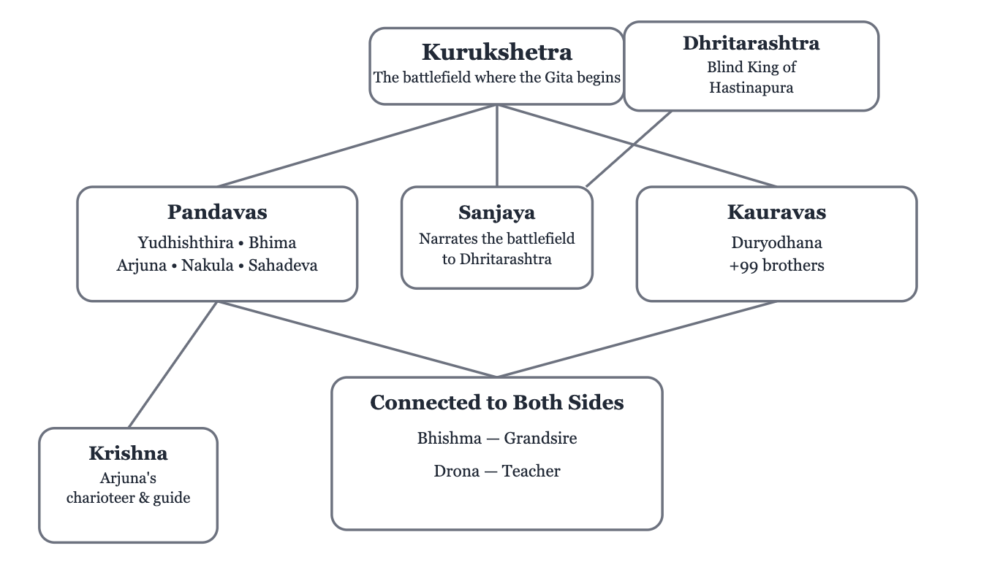

Ongoing
Bhagavad Gita: A Journey from Confusion to Clarity
Exploring the Inner Battlefield and the Path of Wisdom: Self, Duty, and Conscious Action
The Bhagavad Gita is a conversation between Arjuna and Krishna, unfolding on the battlefield of Kurukshetra just before a war begins. Arjuna is caught between his duty and his love for the people standing on the other side. His confusion becomes the doorway to a much deeper conversation about who we are, how we act, what we are attached to, and what it means to live with clarity.
But the Bhagavad Gita does not begin with this conversation.
How did Arjuna arrive here in the first place?
The Bhagavad Gita is part of the sixth of the eighteen books of the Mahabharata, known as the Bhishma Parva. The Gita itself takes place across Chapters 23–40, just before the battle of Kurukshetra begins. By the time we reach the battlefield, the story has already unfolded across the five books before the Bhishma Parva—through generations of family relationships, rivalries, choices, and conflicts that have led everyone to this moment.
Before the Gita
A small note before we begin: There will be many names along the way, and it can feel confusing at first. But don't worry about remembering everyone. Just as people become familiar to us through the different relationships they hold in our lives, these characters will gradually become familiar as the story unfolds.
The Bhagavad Gita takes place at a very specific moment in the Mahabharata: just as the armies of the Pandavas and Kauravas are about to enter battle.
But this battlefield did not appear overnight. The five books before it lay the foundation for everything that is about to happen — the family relationships, rivalries, choices, promises, and conflicts that eventually lead to Kurukshetra.
Here is a glimpse of the story that brings us to the battlefield.
1. Adi Parva — The Beginning
The story begins with the Kuru dynasty, introducing the Pandavas, Kauravas, Bhishma, Drona, Krishna, and the relationships that connect them.
2. Sabha Parva — The Dice Game
After the Pandavas establish their kingdom and gain great power, Duryodhana becomes envious of their success. At his urging, and with Shakuni acting as the skilled player of dice, Yudhishthira is invited to a game of dice in the royal court.
Yudhishthira accepts the invitation and gradually loses his kingdom, his wealth, his brothers, himself, and Draupadi. The game leads to Draupadi's humiliation in the court and eventually to the Pandavas' exile.
3. Vana Parva — The Forest
The Pandavas spend twelve years in exile, facing hardship and gathering the strength and wisdom that will shape what comes next.
4. Virata Parva — The Year in Disguise
The Pandavas spend their final year of exile in disguise. After fulfilling the terms they agreed to, they return to claim back their kingdom as promised. But the Kauravas refuse to honour the agreement.
5. Udyoga Parva — The Road to War
Krishna attempts to negotiate peace between the two sides, but the Kauravas refuse to give back what was promised. The effort fails, and war becomes unavoidable.
6. Bhishma Parva — The Battlefield
The armies gather at Kurukshetra. Arjuna asks Krishna to place their chariot between the two armies — and sees the people he loves standing on both sides.
This is where the Bhagavad Gita begins.
Reading the Bhagavad Gita Together
Now that we have a glimpse of the story that brought everyone to Kurukshetra, we can begin reading the Bhagavad Gita itself.
One chapter at a time, read it slowly. I’ll share what catches my attention, what I had to look up, and the questions that arise along the way below.
Read the chapter first, then come back and explore together with me.
Three Things to Carry While Reading
1. What is happening?
The story. What is happening in the scene, and where are we in the story?
2. What is being said?
The literal meaning. What is Krishna, Arjuna, or the other characters actually saying?
3. What might this teach?
The reflection. What questions, ideas, or lessons might we take from what we have read?
Chapter 1 — Arjuna Vishada Yoga
The Yoga of Arjuna's Despair
Chapter 1 opens with Dhritarashtra, the blind king, asking Sanjaya what is unfolding on the battlefield. As Sanjaya describes the scene, the warriors are introduced and Arjuna's despair begins to emerge.
Who Are All These People?
One of the first things I found myself wondering about in Chapter 1 was not actually about the philosophy—it was about the names.
Even in the very first verse, I was already asking myself: Who is Dhritarashtra? Who is Sanjaya? Why is Sanjaya the one describing the battlefield?
And then more names begin to appear—Duryodhana, Bhishma, Drona, Arjuna, Krishna, and many others.
I quickly realised that understanding the relationships between these characters is important to understanding why Arjuna is so overwhelmed when he looks across the battlefield.
So, before diving deeper into the chapter, I made a little mind map to help understand who everyone is and how they are connected.

Who's Who
Curious about a name? Hover over it.
Pandava Army
Bhima
Bhima
Second of the five Pandava brothers, known for his great strength.
Yuyudhana
Yuyudhana (Satyaki)
A Yadava warrior and ally of the Pandavas.
Virata
Virata
King of Matsya and an ally of the Pandavas.
Drupada
Drupada
King of Panchala and father of Draupadi.
Dhrishtaketu
Dhrishtaketu
King of Chedi and an ally of the Pandavas.
Chekitana
Chekitana
A Yadava warrior fighting alongside the Pandavas.
Purujit
Purujit
A relative and ally of the Pandavas.
Kuntibhoja
Kuntibhoja
King and relative of the Pandavas; foster father of Kunti.
Shaibya
Shaibya
An elder king and ally of the Pandavas.
Yudhamanyu
Yudhamanyu
A warrior fighting for the Pandavas.
Uttamaujas
Uttamaujas
A warrior fighting for the Pandavas.
Abhimanyu
Abhimanyu
Son of Arjuna and Subhadra; a young Pandava warrior.
Sons of Draupadi
Sons of Draupadi
The five sons of Draupadi, one by each of the Pandava brothers.
Kaurava Army
Drona
Drona
Martial teacher of both the Pandavas and Kauravas.
Bhishma
Bhishma
The grandsire of the Kuru family and a great warrior.
Karna
Karna
A great warrior and close ally of Duryodhana.
Kripa
Kripa
Elder warrior and teacher in the Kuru court.
Ashvatthama
Ashvatthama
Son of Drona and a warrior on the Kaurava side.
Vikarna
Vikarna
One of Dhritarashtra's sons and a Kaurava warrior.
Bhurishrava
Bhūrishrava
Son of Somadatta and a warrior fighting for the Kauravas.
Other warriors
Other warriors
Duryodhana mentions that many other warriors are present on his side.
The People on the Other Side
Something that stood out to me is that Arjuna isn't facing strangers on the battlefield. The Pandavas and Kauravas are cousins, both belonging to the larger Kuru family.
He sees
Bhishma
Bhishma
The grandsire of the Kuru family. He took a great vow to give up
his claim to the throne and remain celibate, and later remained
loyal to the throne of Hastinapura.
, the grandsire of the family, and
Drona
Drona
The teacher of both the Pandavas and Kauravas. He trained them
in warfare and was especially known as Arjuna's teacher in archery.
, his teacher.
But Arjuna isn't the only one facing a difficult situation. Bhishma and Drona are also standing on the battlefield, facing people who are their own family and, in Drona's case, even his students. They have chosen to fight on the Kaurava side, yet they must face the very people they have loved, taught, and protected.
Arjuna isn't simply looking at an opposing army. He is looking at his own family — his cousins, his grandfather, his teacher, relatives, friends, and people he knows.
This makes the conflict feel deeper than simply choosing between winning and losing a war. There is a sense that almost everyone on the battlefield is caught in a web of relationships and duties that makes the idea of simply choosing a "side" much more complicated.
It also helps us understand why Arjuna begins to worry about the destruction of family dharma. The consequences of the war are not limited to those who fight; they threaten to disrupt the family and social order that holds their community together.
One Person, Many Identities
One thing I noticed while reading Chapter 1 is that Krishna and Arjuna are not always referred to simply as “Krishna” and “Arjuna”.
Instead, the translation uses descriptions such as son of Pritha, lord of the cows, killer of Madhu, and mover of men.
At first, I was like... wait, who are they talking about? But then I realised that these are different ways of referring to the same person, highlighting their family, qualities, relationships, or stories.
It made me think about how one person can carry many identities. We can be someone's child, someone's friend, someone's teacher, or be known for something we have done.
The person hasn't changed — but the aspect being highlighted has. Maybe we are like that too. We often think of ourselves as one fixed identity, but different parts of us appear depending on the people we are with and the roles we take on.
So one little thing I took away from Chapter 1: one person can carry many identities.
How Did We Get Here?
Chapter 1 may look like the moment when the battle is about to begin, but it also feels like a moment to look back at everything that has brought everyone here. Their duties, relationships, vows, loyalties, and past choices have all shaped the path that led them to this moment.
And perhaps this is where the deeper questions begin: What is our dharma? What is our duty? What makes an action right? And what happens when every choice seems to cause suffering for someone?
Arjuna is standing at the point where all these questions come together. The battle has not yet begun, but the conflict within him already has.
How do I know which path to take when there is no choice that feels completely right?
Chapter 2 — Samkhya Yoga
The Yoga of Knowledge
Chapter 2 begins with Arjuna still overwhelmed by what he saw on the battlefield. He questions whether victory can really bring happiness if that victory means killing his own relatives, teachers, friends, and people he loves.
1. Arjuna's Crisis (2.1–10): Understanding the Cause of Inaction
Arjuna questions:
"Even if we win, what joy is there in killing our relatives?"
At first, his refusal to fight appears compassionate. But Krishna looks deeper.
Arjuna finally surrenders:
"I am your disciple. Teach me." (2.7)
This marks the beginning of the teaching.
Instead of immediately telling him what to do, Krishna addresses the underlying confusion that has made action impossible.
Arjuna's inability to act is not simply caused by compassion. It arises from grief, attachment, fear of consequences, and confusion about his identity and duty. Throughout the chapter, Krishna gradually untangles these causes, leading Arjuna from paralysis toward ease in action (Karma Yoga).
Before asking "What should I do?", perhaps we first need to understand what is preventing us from seeing clearly.
2. The Eternal Self (2.11–30): What Are You Really Grieving?
Krishna introduces the foundation of the chapter.
The body changes. The mind changes. Our emotions change. Our relationships, roles, circumstances, and even our sense of who we are can change.
Yet Krishna points to something deeper that is not subject to the same kind of change. The Self is described as unborn, undying, and untouched.
"Weapons cannot cut it; fire cannot burn it." (2.23)
Rather than simply denying grief, Krishna invites Arjuna to distinguish between what changes and what is truly enduring.
How often we define ourselves through things that are constantly changing. We might think, I am my body, I am my thoughts, I am this role, or I am what I have achieved.
But if all of these are changing, then what happens when we use them as the foundation of our identity?
This doesn't mean that emotions should be ignored. Arjuna's grief is real. Rather, he is being asked not to mistake his present emotional experience for the whole of who he is.
3. Samkhya (2.31–39): Seeing Reality Clearly
Krishna then introduces Samkhya, a way of seeing reality through discrimination. It helps distinguish between what is changing and what is not.
Samkhya, distinguishes between Purusha and Prakriti:
- Purusha — consciousness, the witnessing principle.
- Prakriti — nature, including the body, mind, senses, and their changing processes.
Arjuna is caught in the movements of his mind — grief, fear, attachment, memories, and ideas about what might happen. Krishna seems to be asking him to develop enough discernment to see these movements without being completely governed by them.
4. The Guṇas (2.45): Are We Being Moved by the Nature?
Krishna tells Arjuna to become free from the three guṇas, the qualities through which Prakriti operates:
- Sattva — clarity and harmony.
- Rajas — activity, desire, and restlessness.
- Tamas — inertia, dullness, and confusion.
Just as:
Some days we feel energetic and driven.
Some days we feel peaceful and clear.
Some days we simply don't want to do anything.
It does not mean that these qualities simply disappear. Rather, we can learn not to be completely identified with or ruled by them.
These states change. They are movements of nature, not the deepest Self, not the whole of who you are.
5. Karma Yoga (2.47–53): Ease in Action
Arjuna is caught between two possibilities: "Should I act or withdraw?"
Krishna's answer is not simply to choose one over the other, but to understand how action can be performed without attachment to its results.
Act from clarity without clinging.
Ease in Action
You have a right to action.
Not to the fruits of action.
Nor should you cling to inaction.
Ease does not come from guaranteed outcomes.
It comes from no longer making outcomes the foundation of your identity.
Yoga is skill in action. (2.50)
- the ability to act appropriately while remaining inwardly steady.
6. Sthita prajna (2.54–72): A Person of Steady Wisdom
Arjuna asks:
"What does a person of steady wisdom look like?"
Krishna describes someone who:
- is not pulled by endless desires,
- remains balanced in pleasure and pain,
- watches the senses without becoming enslaved,
- acts from inner fullness.
Steady wisdom is not emotional numbness.
It is remaining spacious while experience continues to arise.
Chapter 2 traces a movement from inaction → integration:
noticing the causes of inaction
→ distinguishing the eternal Self from what is changing
→ developing discernment through Samkhya
→ becoming less ruled by the gunas
→ practicing Karma Yoga
→ integrating understanding into a life of steady wisdom.
Chapter 3 — Karma Yoga
The Yoga of Action
Chapter 3 begins with Arjuna still confused about the relationship between knowledge and action. If insight and wisdom are so important, why should he continue to act?
1. Arjuna's Question (3.1–2): If Knowledge Is Higher, Why Act?
Arjuna questions:
"If you consider knowledge to be better than action, then why do you urge me to this terrible action?" (3.1)
Arjuna is still trying to understand whether freedom comes from stepping away from action or from acting differently.
Krishna begins by explaining that there are two foundations through which
human beings can approach life:
the yoga of knowledge and the yoga of action.
2. The Two Foundations of Life: Seeing and Living (3.3–9)
The yoga of knowledge (jnana) develops understanding and discernment.
The yoga of action (karma) brings that understanding into the way we live
and participate in the world.
Thinking of them as two parts of the same body: Eyes and Feet
- Eyes without feet can see the destination but never move.
- Feet without eyes can move quickly but wander.
Together, they become one practice.
Action itself cannot simply be avoided. As long as we are embodied and participating in life, we are acting in some way.
Breathing, thinking, digesting, speaking, choosing — even avoiding action is itself a kind of action.
The question therefore changes from: "How can I avoid action?" to "How can I act without being bound by action?"
Krishna distinguishes between two mistaken paths.
- The first is physical withdrawal while the mind remains attached:
Someone may stop working, but internally they continue replaying desires, fears, and comparisons.
- The second is acting while remaining inwardly free. Freedom is therefore not measured by stillness. It is measured by the quality of the mind while acting.
3. Yajna: Action as Participation in Life (3.10–16)
Krishna describes life as an interconnected cycle sustained through yajna — action performed as an offering rather than simply for personal gain.
We are not separate from the larger cycle of life. We receive from the world, and we also participate in sustaining it through our actions.
In this way, action is not merely about achieving something for ourselves. It can also become a form of participation, contribution, and reciprocity.
4. Karma Yoga: The Path of Selfless Action (3.17–24)
Krishna gives himself as an example. He says that there is nothing in the three worlds that he needs to accomplish or attain, yet he continues to act.
"There is nothing in the three worlds that I need to accomplish, nor anything unattained that I need to attain; yet I continue to act." (3.22)
This shows that action does not have to come from a sense of lack.
We often act because we want something we do not yet have. Krishna presents another possibility: to act even when there is nothing personal left to gain.
Action can become participation rather than acquisition.
He also explains that those who are respected have a responsibility because others may follow their example. Action therefore affects not only ourselves but also the larger world around us.
5. The Gunas and the Nature of Action (3.27–29)
Krishna then asks us to look more closely at what is actually moving our actions.
"The gunas of nature perform all actions." (3.27)
The three gunas — sattva, rajas, and tamas — are different tendencies within nature that influence how we think, feel, and act.
Sometimes an action comes from clarity. Sometimes it comes from restlessness, desire, fear, habit, or inertia.
We may immediately think, "I am doing this," without noticing what is actually driving the action.
Understanding the gunas therefore becomes part of discernment: learning to observe the forces moving through us rather than automatically identifying with every impulse.
6. Dharma: Acting According to What Is Ours (3.30–35)
Krishna then brings the teaching toward dharma and svadharma — one's own dharma.
Svadharma is not simply about choosing what we like or finding a perfect life purpose. It points toward the responsibilities and way of acting that genuinely belong to us in our particular situation.
"Better one's own dharma, though imperfectly performed, than another's dharma, even if performed perfectly." (3.35)
This becomes difficult because our perception can be clouded by desire, fear, attachment, comparison, and the gunas.
Discernment therefore does not necessarily mean knowing with absolute certainty what our dharma is. It means becoming clear enough to distinguish what is true from what we merely want, fear, or imagine.
7. Desire and the Loss of Discernment (3.36–43)
Arjuna asks why we sometimes act against our own understanding, as though something inside us is compelling us.
For example, there are times when we know something is wrong. Why do we still do it?
Krishna identifies desire, which can become anger when obstructed, as a powerful force that clouds understanding.
The senses are drawn toward their objects, the mind becomes attached, and desire can gradually take over discernment.
The practice is therefore not simply to stop acting, but to understand the forces behind action and gradually allow deeper discernment to guide them.
8. Karma Yoga: Seeing Clearly, Acting Fully
Chapter 3 brings knowledge and action back together.
Knowledge helps us see.
Dharma gives direction to our action.
Karma Yoga teaches us how to act without clinging to the fruits.
The Hierarchy Within:
Chapter 3 traces a movement from seeing clearly → acting fully:
→ understand what moves you: the gunas
→ recognize what is yours to do: your svadharma
→ practice Karma Yoga
→ act fully according to your own dharma, without clinging to the outcome
Therefore, knowing the Self to be beyond the intellect,
steady the self by the Self,
and conquer this difficult enemy called desire.
Chapter 4 — Jnana Karma Sanyasa Yoga
The Yoga of Knowledge, Action, and Renunciation
Chapter 4 opens with Krishna reminding Arjuna that true seeing isn't new — it is ancient, forgotten, and remembered again.
1. An Ancient Teaching Renewed (4.1–3)
Krishna tells Arjuna that the yoga he is teaching is ancient. It was passed from one person to another, but over time its understanding was lost. He is sharing it with Arjuna now as both a devotee and a friend.
2. Why Does Krishna Appear? (4.4–11)
Arjuna asks a reasonable question: How could Krishna have taught this yoga long ago if Krishna was born more recently?
Krishna replies that both he and Arjuna have passed through many births, but Krishna remembers them. He says that although he is unborn and imperishable, he manifests when dharma declines and adharma rises.
Dharma can mean righteousness, but it also carries a sense of right order and living in accordance with what sustains life. Krishna's appearance is connected to restoring that order.
He then says that people approach him in different ways, and he responds to them accordingly. (4.11)
3. The Creator Who Is Not Bound by Action (4.12–15)
Krishna observes that people often act in the hope of obtaining a particular result. He then describes a fourfold social order associated with guna (qualities) and karma (actions). (4.12–13)
The distinction is that he is not driven by desire for the fruits of action, nor changed or bound by acting. Krishna asks Arjuna to act with this understanding. (4.14–15)
4. Three Types of Action: Karma, Vikarma, Akarma (4.16–18)
Krishna says that even wise people can be confused about action. To understand it, Arjuna needs to distinguish three terms:
- Karma: action, especially prescribed or appropriate
action. When performed for personal reward, even a proper action
can bind the doer.
- Vikarma: wrong or prohibited action — acting contrary
to what ought to be done.
- Akarma: inaction or non-action — actions performed without selfish attachment or done purely as an offering to the Divine.
The distinction is not simply between doing something and doing nothing. These are not always clear from outward appearances. Someone may look active while acting without attachment. Someone else may look inactive while avoiding what needs to be done out of fear or desire.
This is why Krishna saysthe nature of action is difficult to discern. (4.17)
"The wise see inaction in action, and action in inaction." (4.18)
For Arjuna, withdrawing from the battle would not automatically be akarma, just as fighting would not automatically be vikarma. He must discern what the situation asks of him and what is driving his choice.
Pause and reflect
Before acting, you can ask yourself:
- Is this an appropriate action to take?
- Am I doing it solely to secure a result for myself?
For example, I have agreed to teach a yoga class. Preparing and showing up for my students is an appropriate action. I may hope they enjoy it, but I can ask: “Am I focusing on what my students need, or am I worrying mainly about how they will judge me?”
Hoping for a good response is natural. The practice is to give my best without making that response the sole reason for acting.
5. The Wise Person Acts Without Being Bound (4.19–23)
Krishna describes a wise person — a pandit — whose actions are free from self-serving desire. Their actions are said to be "burned" in the fire of knowledge. (4.19)
They still work, make choices, and meet their responsibilities. What changes is their relationship with the result: they do not depend on it for their sense of completeness.
This is why Krishna can speak of someone acting and yet "doing nothing." He is describing inward freedom, not physical inactivity or a lack of responsibility.
Content with what comes, and steady through success and failure, the person continues to act without being caught by the outcome. Action done in this spirit becomes an offering. (4.21–23)
6. Seeing the Whole Action as an Offering (4.24–32)
In 4.24, Krishna describes a person who sees every part of an offering in relation to Brahman — the one who offers, what is offered, and the act of offering itself.
He then expands yajna beyond the fire ritual. An offering can also take the form of:
- Worship and devotion. (4.25)
- Restraint of the senses and their impulses. (4.26–27)
- Giving material resources, undertaking discipline, practicing yoga, or studying to deepen understanding. (4.28)
- Working consciously with breath or food intake. (4.29–30)
These are different forms of practice. What connects them is the intention to offer something — our resources, attention, effort, or habits — rather than acting only for personal gain.
Even ordinary acts such as breathing, eating, listening, and seeing
can be approached with awareness and a sense of offering.
What is one ordinary thing you do each day that you could approach
in this way?
8. Why Knowledge Matters (4.33–39)
After listing the different offerings, Krishna says that an offering made through knowledge is greater than one made only with material things. Action finds its fulfilment in understanding.
He encourages Arjuna to learn from those who have seen the truth: approach them, ask questions, and learn through sincere engagement. Arjuna's questions are therefore part of learning, not a failure to learn.
"As fire turns fuel to ash, knowledge transforms one's relationship with action." (4.37)
When a person sees more clearly and acts without selfish attachment, they are no longer caught in the same cycle of desire and action. This does not erase what happened in the world or remove the need to take responsibility for one's actions.
9. Clear the Doubt, Then Rise (4.40–42)
Krishna warns about doubt that keeps a person stuck. The difficulty comes when doubt prevents a person from learning or taking the next step.
"Cut through the doubt born of ignorance with knowledge, take up yoga and rise." (4.42)
Chapter 4 ends by returning Arjuna to action. Knowledge is not merely something to collect or contemplate. It helps him see clearly enough to meet what is before him.
The Thread Through Chapter 4
Krishna's teaching moves from who he is, to how action can cease to bind, to offering as a way of practising, and finally to knowledge that clears doubt.
The question beneath chapter 4 might be:
"Can I understand what I am doing deeply enough to act wholeheartedly,
without clinging to the outcome?"
Chapter 5 — Karma Sanyasa Yoga
The Yoga of Renunciation of Action
1. Renunciation or Action? (5.1–6)
Chapter 5 begins with Arjuna returning to a question that has been developing throughout the teaching. Krishna has spoken about renunciation, but he has also repeatedly asked Arjuna to act through karma yoga.
Arjuna therefore asks which path is better: renouncing action or performing action through yoga.
Krishna explains that both sanyasa (renunciation) and karma yoga can lead to freedom. But the wise understand that they are not ultimately opposed to each other. (5.4–5)
True renunciation is not simply stopping outward action. It is letting go of attachment to the results of action. In this sense, karma yoga becomes a way of practising renunciation while still participating fully in life.
For someone like Arjuna, who has responsibilities that cannot simply be abandoned, Krishna says that karma yoga is the more suitable path. Renouncing action without first developing this inner freedom can itself become difficult. (5.6)
Renunciation does not always mean leaving something behind. Sometimes it means changing the way we hold what we are already doing.
2. Acting Without Being Bound (5.7–12)
Krishna describes the person established in karma yoga. Such a person may still see, hear, touch, move, speak, eat, sleep, and carry out ordinary responsibilities.
The difference is in how they understand their actions. They do not cling to the idea that every action must produce a result that belongs to them.
They act as an offering, while letting go of attachment to the fruits. Those who act without attachment attain peace, while those who are attached to the results become bound by them. (5.12)
Pause and reflect
Think of something you are doing — or hesitating to do — that matters to you. Are you giving it your full attention, or are you hesitating to act because you are making the result a measure of your worth?
3. The City of Nine Gates (5.13–16)
Krishna gives a striking image of the body as a
city of nine gates
City of nine gates
A metaphor for the human body. The nine gates are traditionally understood as
the two eyes, two ears, two nostrils, the mouth, the anus, and the reproductive organ.
Through these openings, we experience and interact with the external world. (5.13)
Krishna says that the Self does not ultimately perform actions or create the results of actions. Rather, the activities of the body, senses, and mind unfold through nature. The changing activities of body and mind are not the whole of who we are.
As understanding becomes clearer, the person begins to loosen the identification of the Self with every thought, impulse, and action.
4. Seeing with Equal Vision (5.17–21)
Krishna then describes what happens when knowledge becomes established. The wise person sees with equal vision.
Krishna gives several examples: a learned and humble person, a cow, an elephant, a dog, and a person regarded as an outcast. (5.18)
He is not saying that these beings are identical in their practical circumstances. Rather, the wise person recognises the same deeper reality within different forms of life.
This way of seeing changes how a person relates to the world. Instead of constantly dividing experience into what is valuable to "me" and what is not, there is a growing recognition of a shared underlying reality.
Such a person is less dependent on external pleasure for fulfilment. Pleasure and pain still arise, but they no longer have the same power to determine the person's inner state. (5.20–21)
"The wise see with equal vision." (5.18)
5. Freedom from Pleasure and Pain (5.22–26)
Krishna reminds Arjuna that pleasures arising from contact with external objects have a beginning and an end. Because they are temporary, they cannot provide lasting fulfilment. (5.22)
The practice is therefore not to reject every pleasant experience, but to understand its nature. If happiness depends entirely on circumstances remaining the way we want, we remain vulnerable to change.
The person who can remain steady when desire and anger arise. Such a person begins to discover a source of happiness that does not depend entirely on what happens outside.
This is another form of renunciation: becoming less dependent on the world to complete us.
6. Peace Through Understanding (5.27–29)
Near the end of the chapter, Krishna describes practices that turn the mind inward: regulating the senses, steadying the breath, and directing attention toward the inner Self. (5.27–28)
He then closes with a concise explanation of the source of peace. Krishna describes himself as the enjoyer of sacrifice and austerity, the great Lord of all worlds, and the friend of all beings. (5.29)
Peace therefore comes not simply from controlling the outside world. It comes from understanding our relationship with action, desire, the results of action, and ultimately with the Divine.
"Knowing me as the friend of all beings, one attains peace." (5.29)
The Thread Through Chapter 5
Chapter 5 begins with a question about renunciation and action.
Krishna's answer is that the wise do not see them as completely separate. Renunciation is ultimately an inner letting go of attachment, and karma yoga allows that renunciation to be practised while still living and acting in the world.
The teaching then moves from action, to the nature of the Self, to equal vision, and finally to inner peace.
We do not necessarily become free by doing less. We become free by understanding more deeply why we act, what we are attached to, and who we believe is doing the action.
Chapter 6 — Dhyana Yoga (Atma Samyama Yoga)
The Yoga of Meditation (Self-Mastery)
1. Action and the Self (6.1–9)
Krishna begins by describing the true spirit of renunciation. A person does not become a renunciant simply by giving up action or withdrawing from the world. What matters is acting without depending on the fruits of action.
This continues the teaching from Chapter 5: the path is not necessarily about avoiding action, but transforming our relationship with it. We can fulfil our responsibilities while loosening our attachment to outcomes.
Krishna then describes two stages of yoga. For someone who is still working towards inner steadiness, action is the means of progress. For someone who has already become established in yoga, quietude becomes the means of deepening that realisation (6.3).
He also asks Arjuna to lift himself through himself, explaining that the self can be both a friend and an enemy (6.5–6). When the mind supports us, it helps us move towards clarity. When it continually pulls us into agitation, attachment, or discouragement, it can become an obstacle.
This invites us to look at our own relationship with the mind. Are our thoughts helping us move towards understanding, or keeping us caught in familiar patterns?
2. Establishing the Practice (6.10–18)
Krishna describes the yogi who practises meditation in solitude, with a steady body and a focused mind. The external setting supports the practice, but the deeper purpose is to cultivate inner steadiness.
He then introduces an important teaching: moderation is essential to yoga.
"Yoga is not for one who eats too much, nor for one who eats too little; neither for one who sleeps too much, nor for one who sleeps too little." (6.16)
This is not a call to become rigid or to control every aspect of life. Rather, it points towards a way of living that supports steadiness. Too much or too little can disturb the mind; a balanced approach helps create the conditions for practice.
In verse 6.18, Krishna describes the yogi whose disciplined mind rests in the Self, free from longing for desires. The practice gradually shifts our attention away from constantly seeking fulfilment outside ourselves and towards discovering a steadiness that does not depend entirely on external circumstances.
Balance is not always about doing more or trying harder. Sometimes it means recognising what is enough.
How we eat, sleep, work, rest, and practise all influence the state of our mind. Rather than forcing ourselves into an ideal, we can learn to observe what supports a more balanced life.
3. The Self and Inner Peace (6.19–23)
Krishna compares a steady mind to a lamp in a windless place. Just as the flame remains still when the wind no longer disturbs it, the mind becomes steady when it is no longer continually pulled in different directions.
He then describes a state in which the mind becomes quiet through meditation and the yogi experiences the Self through the self, resting in the Self (6.20).
The happiness described here is not dependent on gaining something new or arranging the external world to meet every desire. It is a joy discovered through inner realisation — a peace that is not easily shaken by circumstances.
Krishna explains that this joy is beyond ordinary sensory pleasure and that, having established oneself in it, one is even no longer shaken by great sorrow (6.21–22).
4. Seeing the Self in All Beings (6.24–32)
Krishna describes the practice of gradually withdrawing the mind from distractions and bringing it back whenever it wanders. He does not suggest that the mind will never stray. Instead, the practitioner repeatedly returns it to the Self (6.25–26).
This returning is part of the practice itself.
"The yogi sees the Self in all beings and all beings in the Self." (6.29)
This teaching points towards a way of seeing beyond separation, where hatred and sorrow no longer take hold, a way of seeing that reaches beyond our usual divisions between ourselves and others. .
In verse 6.30, Krishna describes the yogi who sees him everywhere and everything in him, explaining that he is never lost to the yogi, nor the yogi to him.
5. The Restless Mind (6.33–36)
After hearing Krishna's description of yoga, Arjuna raises a concern. The state Krishna describes seems difficult to attain because the mind is restless, turbulent, powerful, and difficult to control — like the wind (6.34).
This is one of the most relatable moments in the chapter. Arjuna does not pretend that the teaching is easy simply because he understands it intellectually. He recognises the gap between knowing what to do and being able to practise it.
Krishna acknowledges the difficulty. He does not dismiss Arjuna's concern or promise that the mind can be controlled effortlessly.
Instead, he offers two means:
practice
Abhyasa
Repeated, sustained practice that trains the mind to return towards steadiness. (abhyasa) and
dispassion
Vairagya
Gradually loosening attachment to desires and mental distractions. (vairagya) (6.35).
Practice means repeatedly returning the mind towards steadiness. Dispassion means gradually loosening our attachment to the thoughts, desires, and distractions that pull us away. Together, they offer a way forward without demanding instant mastery.
This also echoes the earlier teaching about moderation. Yoga is not achieved by force alone. It develops through consistent effort and a changing relationship with the mind.
The mind wanders. We become distracted, attached, impatient, or discouraged.
The practice is not to judge ourselves every time this happens, but to notice and return.
Again and again.
6. The Yogi Who Falls Short (6.37–45)
Arjuna then asks what happens to someone who begins the practice with faith but fails to reach its goal. Does all that effort become wasted?
His question acknowledges a familiar fear: what if we try sincerely but do not succeed? What if our practice is interrupted, or we cannot sustain the discipline we intended to maintain?
Krishna reassures him that spiritual effort is not lost. He explains that one who strives towards yoga does not simply lose the value of that effort, even if they do not attain perfection in this life (6.40).
The verses that follow describe the continuation of spiritual progress across lifetimes, reflecting the Gita's broader understanding of rebirth and karma. According to Krishna, previous practice can support future progress, and the sincere practitioner is drawn towards yoga again (6.41–45).
Sometimes, progress need not be measured only by immediate results.
We may not see the full outcome of our efforts, but this does not make the effort meaningless.
7. The Highest Yogi (6.46–47)
Krishna concludes by saying that the yogi is greater than the ascetic, the person of knowledge, and the person who performs ritual action. He then encourages Arjuna to become a yogi.
In the final verse, Krishna describes the highest yogi as one who has faith and whose inner being is absorbed in him (6.47).
This ending brings together the different threads of the chapter: discipline, meditation, steadiness, perseverance, and devotion.
The chapter begins with action and quietude, explores the training of the mind, and ends by emphasising wholehearted devotion — where we direct our attention, trust, and commitment.
The Thread Through Chapter 6
Chapter 6 develops the Gita's earlier teachings by bringing attention to the mind and the practice of meditation.
In Chapter 5, Krishna explains how action can be performed without attachment to its fruits. In Chapter 6, he explores how we cultivate the inner steadiness that makes such action possible.
The chapter moves from action to meditation, from moderation to inner joy, and from personal practice to seeing the Self in all beings. Arjuna then reminds us that the mind is not easy to control, and Krishna responds not with a promise of instant success, but with practice and dispassion. Finally, he reassures Arjuna that sincere effort is not wasted and encourages him to become a yogi.
One thread runs throughout: yoga is cultivated through practice, balance, and a gradual change in how we relate to ourselves and the world.
Keep practising. Keep returning.
Chapter 7 — Jnana Vijnana Yoga
The Yoga of Knowledge and Realizations
1. Knowing Through Knowledge and Experience (7.1–3)
Chapter 7 begins with Krishna inviting Arjuna to understand him more deeply. He speaks of both jnana (knowledge) and vijnana (realisation or experiential understanding).
Knowledge allows us to understand something, but realisation goes beyond intellectual understanding. It is when what we have learned becomes something we recognise through our own experience, the vijnana.
Krishna says that by taking refuge in him and practising yoga with a steady mind, Arjuna can come to know him fully, without doubt. He also acknowledges that very few people strive to understand this ultimate reality in its entirety. (7.1–3)
Knowledge alone does not mean we have fully understood its wisdom. Only when we begin to apply what we learn in our lives do we get to experience it for ourselves and gradually recognise the truth beneath the words.
2. The Two Natures of the Divine (7.4–7)
Krishna then describes two aspects of his nature. The first is his material nature, known as apara prakriti. It consists of eight elements: earth, water, fire, air, space, mind, intellect, and ego. (7.4)
These elements describe the material and mental aspects of existence. But Krishna explains that there is another, higher nature, para prakriti, which is the living principle that sustains all beings. (7.5)
Together, these two natures form the basis of the world we experience. Krishna describes himself as the source from which all beings arise and into which they return. He is also the thread that holds everything together, just as pearls are held together by a thread. (7.6–7)
What we see and experience is only one aspect of existence. Krishna invites Arjuna to look beyond the different forms of life and recognise the deeper principle that sustains them.
3. Recognising the Divine in Everyday Life (7.8–12)
Krishna continues by describing how his presence can be recognised through the ordinary qualities and experiences of life.
He is the taste in water, the light of the sun and moon, the sacred syllable Om, the sound in space, and the strength in human beings. (7.8)
He is the pure fragrance of the earth, the brilliance of fire, the life within all beings, and the discipline of those who practise austerity. (7.9)
Krishna also describes himself as the eternal seed of all beings and the intelligence of the intelligent. He is the strength that is free from desire and attachment, and the desire that is aligned with dharma (right conduct or duty). (7.10–11)
He then explains that the three gunas — sattva, rajas, and tamas — arise from him, but he is not limited by them. (7.12)
Rather than asking Arjuna to look for the Divine only in extraordinary places or experiences, Krishna points towards the essence within ordinary things.
Sometimes, what we are looking for is not separate from everyday life. It may be found in the simplest things we often take for granted — the taste of water, the warmth of sunlight, or the experience of being alive.
4. Understanding Maya and the Three Gunas (7.13–15)
Krishna explains that the three gunas influence how beings experience and relate to the world. Because people become absorbed in these changing qualities, they may fail to recognise the deeper reality beyond them. (7.13)
He describes this as maya, his divine power that is difficult to overcome. Those who take refuge in him, however, can move beyond its influence. (7.14)
Krishna also describes those who remain caught in ignorance, driven by harmful tendencies and unable to recognise the Divine. (7.15)
The teaching is not simply about rejecting the world. Rather, it is about recognising how our perception can become clouded when we are completely identified with the changing qualities of nature.
5. Four Kinds of People Who Turn to the Divine (7.16–19)
Krishna describes four kinds of people who turn towards him:
- Arta — those who seek help when they are in distress.
- Jijnasu — those who seek knowledge and understanding.
- Artharthi — those who seek material benefits or fulfilment of desires.
- Jnani — those who have gained wisdom and seek the Divine through understanding.
Krishna regards all four as noble because they turn towards him. However, he describes the wise person, whose devotion is rooted in understanding and who sees the Divine as the highest goal (jnani), as especially dear to him. (7.16–18)
He then says that after many lifetimes of spiritual development, a person of wisdom comes to realise:
"Vasudeva is everything." (7.19)
This expresses a recognition that the Divine is not separate from the whole of existence, but its underlying source and reality. Such understanding is described as rare.
6. Desire, Faith, and the Fruits of Worship (7.20–23)
Krishna explains that people whose understanding is shaped by particular desires may turn towards different forms of worship, seeking the results they wish to obtain. (7.20)
He does not dismiss their faith. Rather, he explains that the Divine sustains the faith through which people pursue their chosen paths. The results they receive, however, are temporary. (7.21–23)
Krishna contrasts these temporary rewards with the deeper realisation of the Divine, which goes beyond the fulfilment of individual desires.
The distinction here is not simply about which form of worship a person follows, but also about what they seek from it. When we approach something only for what we can gain, our understanding may remain limited by those desires.
7. Seeing Beyond Appearances (7.24–30)
Krishna then addresses a misunderstanding about his nature. Some people believe that he was previously unmanifest and has now become manifest in a physical form. But Krishna explains that his true nature is beyond what can be seen through ordinary perception. (7.24)
His divine maya veils this deeper reality, meaning that not everyone is able to recognise him as he truly is. Krishna also explains that he knows all beings across time, while ordinary beings do not possess the same complete understanding. (7.25–26)
He then describes how attraction and aversion arise from the experience of pleasure and pain, creating confusion and influencing how people perceive the world. (7.27)
Those whose actions have become purified and who are free from these opposing influences are able to turn towards the Divine with greater steadiness. (7.28)
Near the end of the chapter, Krishna introduces several concepts: Brahman (the ultimate reality), Adhyatma (the inner Self), Karma (action), Adhibhuta (the changing material world), Adhidaiva (the divine principle associated with the gods), and Adhiyajna (the Divine present in sacrifice and within the body). (7.29–30)
These ideas prepare Arjuna for the next chapter, where he asks Krishna to explain them further.
The Thread Through Chapter 7
Chapter 7 begins with the distinction between knowledge and realisation.
Krishna gradually expands Arjuna's understanding of existence, from the material and living aspects of nature, to the Divine presence within everyday experiences, and finally to the ways in which desire, attachment, and limited perception prevent people from recognising this deeper reality.
The chapter reminds us that understanding is not only about gathering more knowledge. It is also about seeing beyond what we usually perceive and recognising the deeper nature of what we experience.
We can read, learn, and understand many things intellectually. But perhaps the deeper question is whether that understanding gradually changes the way we see and experience life.
May we not only understand the wisdom, but live it — in our thoughts, words, actions, and in the way we meet each moment.
Knowledge is like a seed. It holds the potential to grow, but it is through practice, experience, and continued nurturing that wisdom blossoms.
Chapter 8 — Aksara Brahma Yoga
The Yoga of the Imperishable Brahman
1. The Imperishable Brahman and the Self (8.1–4)
Arjuna begins by asking Krishna to explain several concepts introduced in the previous teachings: Brahman, Adhyatma, Karma, Adhibhuta, Adhidaiva, and Adhiyajna. He also asks how Krishna can be remembered at the time of death.
How do these different dimensions relate to one another? What is the relationship between the imperishable, the individual self, the changing world, and the Divine?
2. Remembering the Divine at the Time of Death (8.5–8)
Krishna explains that whoever remembers Him at the time of death attains Him. He then expands this idea by explaining that whatever state of being one remembers when leaving the body, that state one attains.
This suggests a connection between our final thoughts and what we have continually contemplated throughout life. What occupies the mind does not simply appear at the last moment; it is shaped by our repeated thoughts, intentions, and attachments.
"Therefore, remember Me at all times and fight." (8.7)
Krishna does not ask Arjuna to abandon his responsibilities in order to remember Him. Instead, He encourages Arjuna to continue performing his duties while keeping his mind connected with the Divine.
3. The Practice of Meditation and Attaining the Supreme (8.9–13)
Krishna describes the practice of remembering the Supreme through meditation. He speaks of contemplating the Divine as the all-knowing, ancient, subtle, and sustaining source of everything.
At the time of death, the yogi who has disciplined the mind, steadied the breath, and remained focused on the Supreme is able to direct their consciousness towards Him.
Krishna also refers to Om, the sacred syllable associated with Brahman.
By remembering the Supreme and
departing
Departing
Refers to the moment of death, when the individual leaves the
physical body. In this chapter, Krishna uses this term when
describing the state of consciousness and remembrance at the
time of death.
while contemplating Om, the yogi attains the highest goal.
These verses bring together meditation, concentration, breath, and remembrance. The practice is not simply about controlling the mind at one particular moment, but about gradually training it to remain focused on what is eternal.
4. Liberation and the Supreme Reality (8.14–22)
Krishna explains that those who remember Him constantly, with an undivided mind, can attain Him with ease. Those who reach Him are no longer subject to repeated birth in this temporary world of suffering.
In Bhagavad Gita 8.17, Krishna describes the vast cycles of cosmic time.
One day of Brahma lasts for 1,000
Maha Yugas
Maha Yuga
A complete cycle of four ages, known as the Yugas:
Satya, Treta, Dvapara and Kali. Together, they span
4.32 million years.
,
equivalent to 4.32 billion years. Brahma's night lasts for
an equal duration.
In Hindu cosmology, the Yugas represent four successive ages through which time moves in a repeating cycle. Together, Satya, Treta, Dvapara and Kali Yuga form one Maha Yuga. These cycles repeat throughout Brahma's day.
During Brahma's day
Brahma's Day
Refers to a period when the universe is manifested and the
world of living beings exists. In Hindu cosmology, Brahma is
the creator deity, and his day and night describe an enormous
cycle of creation and dissolution.
, beings come into manifestation. When night
arrives, they dissolve back into an unmanifested state.
At the beginning of the next day, manifestation begins again.
This describes the cyclical nature of the universe: creation, dissolution, and creation once more.
However, Krishna goes further in verse 20. Beyond this temporary unmanifested state, He describes another eternal unmanifested reality that does not perish even when all beings and the manifested universe dissolve.
This distinction highlights that the unmanifested state into which the universe dissolves is not necessarily the ultimate reality. One belongs to the cosmic cycle, while the other is described as eternal and beyond that cycle.
Krishna then identifies the Supreme Person as the one who pervades everything and within whom all beings exist. He explains that this Supreme can be attained through unwavering devotion.
"That Supreme Person can be attained through unwavering devotion. All beings dwell within Him, and He pervades everything." (8.22)
Even the universe itself goes through cycles of manifestation and dissolution. Yet Krishna points towards something beyond these cycles — something imperishable.
What is temporary and what is eternal? What changes and what remains? What keeps us within the cycle of existence, and what takes us beyond it?
5. The Two Paths After Death (8.23–27)
Krishna describes two paths through which yogis depart after death: the bright path and the dark path.
The bright path is associated with fire, light, daytime, the waxing
moon, and the six months of the Sun's northern course
(Uttarayana
Uttarayana
Uttara means north, and ayana means movement
or course.
Traditionally, it refers to the six-month period when the Sun
appears to move northward, from around the winter solstice to
the summer solstice. In Hindu tradition, it is often regarded
as the bright or auspicious half of the solar year.
).
Those who depart through this path attain Brahman and do not return.
The dark path is associated with smoke, night, the waning moon,
and the six months of the Sun's southern course
(Dakshinayana
Dakshinayana
Dakshina means south, and ayana means movement
or course.
Traditionally, it refers to the six-month period when the Sun
appears to move southward, from around the summer solstice to
the winter solstice.
).
Those who depart through this path reach the lunar realm but
eventually return to the cycle of rebirth.
These descriptions are traditionally understood as two different paths after death, often called the path of the gods (Devayana) and the path of the ancestors (Pitriyana). They distinguish between attaining the Supreme and experiencing temporary heavenly rewards before returning to rebirth.
Reaching a heavenly realm does not necessarily mean attaining liberation. Even a higher or more pleasant state of existence can still be temporary, keeping one within the cycle of rebirth.
Krishna concludes by reminding Arjuna not to become confused by these paths, but to remain steadfast in yoga at all times.
Rather than becoming preoccupied with what happens at the moment of death, perhaps the emphasis is on how we live and what we cultivate throughout life.
remembrance
Remembrance
The practice of keeping the Divine in one's thoughts and
consciousness through awareness, devotion and meditation.
In this chapter, it refers to cultivating an ongoing
connection with Krishna, not merely recalling Him at the
moment of death.
, devotion, and spiritual practice are not reserved for the final moment. They are part of the journey itself.
6. The Highest Goal (8.28)
Krishna concludes the chapter by explaining that the yogi who understands this teaching goes beyond the merits obtained through the study of the Vedas, sacrifices, austerities, and charity, and attains the supreme, primordial abode.
This does not necessarily make these practices meaningless. Rather, Krishna points towards a goal that goes beyond the temporary merits and rewards they can bring.
The ultimate aim is not simply to accumulate good karma or attain a better destination within the cycle of existence, but to reach the Supreme and go beyond the cycle itself.
The Thread Through Chapter 8
Chapter 8 explores the imperishable nature of Brahman, the relationship between consciousness and death, and the cyclical nature of the universe.
It begins with questions about the nature of existence, moves through the importance of remembering the Divine, and expands into the vast cycles of cosmic creation and dissolution. Krishna then introduces a reality beyond these cycles and describes the two paths after death.
One idea runs throughout the chapter: the distinction between what is temporary and what is eternal. The material world, even its highest realms, remains subject to change. Yet Krishna points towards something imperishable beyond it.
Remember. Practise. Remain connected.
Chapter 9 — Raja Vidya Raja Guhya Yoga
The Yoga of the Royal Knowledge and Royal Secret
Chapter 9 explores the supreme nature of the divine and its relationship with all existence. The divine is present throughout the universe, yet remains beyond its changing nature. The chapter also emphasises Bhakti (devotion) as a path towards recognising and connecting with this greater reality.
1. The Supreme Knowledge (9.1–3)
The chapter begins by introducing the highest knowledge: understanding the divine through both wisdom and direct experience. This knowledge is considered the most profound because it reveals the nature of existence and offers freedom from suffering.
However, this understanding requires faith and an open mind. Without faith, one remains caught in the cycle of worldly existence without reaching this deeper understanding.
"This is the king of knowledge, the king of secrets, the supreme purifier." (9.2)
2. The Divine in All Existence (9.4–10)
The divine pervades the entire universe in an unmanifest form. All beings exist within this greater reality, yet the divine is not limited by them.
"All beings exist in Me, but I am not limited by them." (9.4–5)
An analogy is given of the wind moving through space: just as the wind exists within space without affecting the vastness of space itself, all beings exist within the divine. (9.6)
The universe undergoes continuous cycles of creation and dissolution. All beings emerge from nature, exist for a time, and eventually return to it. Yet the divine remains unattached to these processes, sustaining creation without being bound by its activities.
3. Recognising the Divine (9.11–19)
Although the divine is present throughout existence, not everyone recognises its true nature. Some see only the human form and overlook the greater reality behind it.
Others approach the divine through different forms of worship, while those with deeper understanding recognise it as the source and foundation of all existence.
The divine is not separate from the things we experience. It is the ritual, the offering, the sacred fire and the act of offering. It is also the source, sustainer, refuge and ultimate destination of all beings.
"I am the father of this universe, the mother, the sustainer and the grandsire." (9.17)
Everything that exists, including the changing conditions of nature, ultimately rests within this greater reality.
4. Different Paths of Worship (9.20–25)
Different forms of worship can lead to different results. Those who perform rituals seeking heavenly rewards may attain temporary happiness, but eventually return to the cycle of worldly existence.
These rewards are temporary because they depend on actions and their results. In contrast, those who seek the divine itself move towards something beyond temporary gains.
"Those who worship the gods go to the gods; those who worship Me come to Me." (9.25)
The distinction is not simply between different forms of worship, but also between seeking temporary rewards and seeking the eternal.
5. The Sincerity of Devotion (9.26–28)
Devotion does not require grand offerings or elaborate rituals. Even the simplest offering is accepted when it is given with sincerity.
"Whoever offers Me with devotion a leaf, a flower, a fruit or water, I accept that offering." (9.26)
Devotion can also extend beyond formal worship. Whatever we do, eat, offer, give or practise can be dedicated to the divine (9.27).
By offering our actions and their results in this way, we gradually become less attached to their outcomes and free ourselves from the binding effects of action (9.28).
Devotion, then, is not limited to prayer or religious rituals. It can become part of everyday life through the intention and awareness we bring to our actions.
6. Divine Impartiality and the Power of Devotion (9.29–34)
The divine is equally present in all beings, without favouring or rejecting anyone. Yet those who approach with devotion establish a special relationship with the divine.
"I am the same in all beings; to Me there is none hateful or dear." (9.29)
The chapter further emphasises that the path of devotion is open to everyone. Even someone who has lived wrongly can turn towards the divine with sincere and wholehearted devotion. What matters is the genuine intention to transform and move towards righteousness (9.30–32).
The final verses encourage us to keep the mind focused on the divine, cultivate devotion, offer respect and surrender with trust. Through this wholehearted connection, one moves towards the ultimate goal (9.33–34).
Reflection: Recognising the Divine in Everything
Chapter 9 brings together the nature of the divine and the importance of devotion. The divine is both present throughout all existence and beyond the changing nature of the universe.
Rather than seeking fulfilment only through temporary rewards, the chapter encourages a deeper connection with the divine. This connection does not depend on elaborate rituals or material offerings, but on sincerity, faith and the intention behind our actions.
From understanding the supreme reality → recognising its presence throughout existence → moving beyond temporary rewards → expressing devotion through everyday actions.
Chapter 10 — Vibhuti Yoga
The Yoga of Divine Manifestations
1. The Supreme Nature of the Divine (10.1–7)
Krishna begins by asking Arjuna to listen once more to His supreme teachings, which He shares out of compassion. He explains that neither the gods nor the great sages fully know His origin, because He is the source from which they themselves arise.
Krishna describes Himself as the unborn, beginningless Lord of all worlds. Whoever understands Him in this way is freed from delusion and wrongdoing.
He then describes the many qualities and states that arise from Him, including intelligence, knowledge, clarity, forgiveness, truthfulness, self-control, happiness, sorrow, fear, fearlessness, non-violence, contentment, and wisdom.
These qualities are not all alike. Some are considered virtues, while others are difficult experiences that we encounter as human beings. Krishna identifies their ultimate source in the Divine, suggesting that both our capacities and our experiences are part of a greater existence. Yet, how we cultivate these qualities and respond to our emotions is also part of our human experience.
If these qualities arise from the Divine, how do we understand our own role in expressing and cultivating them?
He also explains that the seven great sages and the four ancient Manus, from whom the various generations of beings descend, originate from His mind.
Whoever understands His divine manifestations and creative power becomes established in unwavering yoga.
2. Devotion and the Recognition of the Divine (10.8–18)
Krishna explains that He is the source of everything, and that all things proceed from Him. Those who understand this truth worship Him with deep devotion.
"I am the source of everything; from Me everything proceeds. Knowing this, the wise worship Me with all their hearts." (10.8)
Those devoted to Him remain absorbed in thoughts of the Divine. They share their understanding with one another, finding joy and satisfaction in speaking about Him.
To those who are constantly devoted and worship Him with love, Krishna grants the understanding through which they can reach Him. He also dwells within their hearts and dispels the darkness of ignorance through the light of knowledge.
Arjuna responds by recognising Krishna as the Supreme Brahman, the Supreme Abode, the Supreme Purifier, the eternal Divine Person, the primordial Lord, and the unborn and all-pervading reality.
He accepts Krishna's teachings and acknowledges that neither the gods nor the demons fully understand His true nature.
Arjuna then asks Krishna to describe His divine manifestations in greater detail, through which He pervades all the worlds.
"How shall I know You, O Yogi, by constantly meditating upon You? In what forms are You to be contemplated, O Lord?" (10.17)
He wishes to hear more about Krishna's divine manifestations, so that he may continue to remember and contemplate Him.
3. The Divine Through Different Manifestations (10.19–38)
Krishna agrees to describe His divine manifestations, but explains that they are only a selection, as His manifestations are endless.
He begins by declaring that He is the Self dwelling in the hearts of all beings. He is the beginning, the middle, and the end of all existence.
"I am the Self, O Gudakesha, dwelling in the hearts of all beings. I am the beginning, the middle, and also the end of all beings." (10.20)
Krishna then describes Himself through examples drawn from different categories of existence. He frequently identifies Himself with the foremost, most remarkable, or most significant within each group.
Divine Beings and Cosmic Manifestations (10.21–23)
The first examples come from the celestial and divine realms, including groups of deities, cosmic elements, and living beings.
| Among... | Krishna identifies with... |
|---|---|
| Adityas |
Vishnu
Vishnu A major deity associated with preservation and the sustaining of cosmic order. |
| Lights | The radiant Sun |
| Maruts |
Marichi
Marichi One of the Maruts, a group of storm and wind deities. This is distinct from the sage Marichi found in other Hindu traditions. |
| Stars |
Shashi
Shashi Another name for the Moon, traditionally described as bearing a rabbit-shaped marking. |
| Vedas |
Sama Veda
Sama Veda One of the four Vedas, particularly associated with verses arranged for melodic chanting. |
| Gods (Devas) |
Indra
Indra King of the Devas, associated with thunder, rain and the heavens. |
| Senses | The mind |
| Living beings | Consciousness |
| Rudras |
Shankara
Shankara A name for Shiva, associated with auspiciousness and well-being. |
| Yakshas and Rakshasas |
Kubera
Kubera Lord of wealth and ruler of the Yakshas. |
| Vasus |
Pavaka (Agni)
Pavaka A name associated with fire and Agni, the Vedic fire deity. |
| Mountains |
Meru
Meru A sacred cosmic mountain, traditionally regarded as the centre or axis of the universe. |
Sages, Sacred Things and Nature (10.24–31)
The examples then extend into sacred knowledge, nature, mythology and different forms of life.
| Among... | Krishna identifies with... |
|---|---|
| Priests |
Brihaspati
Brihaspati The preceptor and teacher of the Devas. |
| Military commanders |
Skanda
Skanda A war deity, also known as Kartikeya or Murugan. |
| Bodies of water | The ocean |
| Great sages |
Bhrigu
Bhrigu One of the great ancient sages in Hindu tradition. |
| Words |
Om
Om (Aum) A sacred syllable representing ultimate reality and used in prayer and meditation. |
| Sacrifices |
Japa
Japa The repeated recitation of a sacred mantra or divine name, often used as a spiritual practice. |
| Immovable things | The Himalayas |
| Trees |
Ashvattha
Ashvattha The sacred fig tree, also known as the peepal tree. |
| Divine sages |
Narada
Narada A divine sage known for travelling between worlds and sharing spiritual knowledge. |
| Gandharvas |
Chitraratha
Chitraratha A celebrated celestial Gandharva, a class of heavenly musicians. |
| Perfected beings |
Kapila
Kapila A revered sage traditionally associated with the philosophy of Samkhya. |
| Horses |
Uccaihsravas
Uccaihsravas A divine, seven-headed horse said to have emerged during the churning of the cosmic ocean. |
| Elephants |
Airavata
Airavata The celestial white elephant associated with Indra. |
| Human beings | The king |
| Weapons |
Vajra
Vajra The thunderbolt weapon of Indra, symbolising immense power. |
| Cows |
Kamadhenu
Kamadhenu A divine wish-fulfilling cow in Hindu mythology. |
| Serpents |
Vasuki
Vasuki A great serpent king, traditionally associated with the churning of the cosmic ocean. |
| Nagas |
Ananta
Ananta The infinite serpent, also known as Shesha, associated with Vishnu. |
| Water deities |
Varuna
Varuna A Vedic deity associated with water and cosmic order. |
| Ancestors |
Aryaman
Aryaman A Vedic deity associated with social bonds, hospitality and ancestral traditions. |
| Those who maintain order |
Yama
Yama The deity associated with death, justice and the regulation of human conduct. |
| Daityas |
Prahlada
Prahlada A devoted follower of Vishnu, born into the Daitya lineage. |
| Those who measure or reckon | Time |
| Beasts | The lion |
| Birds |
Garuda
Garuda A divine eagle-like being and the traditional mount of Vishnu. |
| Purifiers | The wind |
| Warriors |
Rama
Rama The hero of the Ramayana and an avatar of Vishnu. |
| Aquatic creatures |
Makara
Makara A mythical aquatic creature, often depicted as a combination of different animals. |
| Rivers |
Ganga
Ganga The sacred river Ganges, personified as a goddess. |
Abstract Concepts and Qualities (10.32–36)
Krishna then moves beyond physical forms and mythological figures, describing His manifestations through knowledge, language, time, human qualities and the processes of existence.
| Among... | Krishna identifies with... |
|---|---|
| All creation | The beginning, middle and end |
| Branches of knowledge | Knowledge of the Self |
| Those who debate | Reasoning that leads to truth |
| Letters | The letter A |
| Compound words |
Dvandva
Dvandva A grammatical compound in which two or more words are joined with equal importance. |
| Time | Inexhaustible Time |
| Creators |
Brahma
Brahma The creator deity in Hindu cosmology, traditionally depicted with four faces facing different directions. |
| Those who take all things away | Death |
| What is yet to come | The source of future existence |
| Feminine qualities | Fame, prosperity, speech, memory, intelligence, steadfastness and forgiveness |
| Hymns |
Brihat Sama
Brihat Sama A particularly revered hymn in the Sama Veda. |
| Poetic metres |
Gayatri
Gayatri A sacred Vedic metre, especially associated with the famous Gayatri mantra. |
| Months |
Margashirsha
Margashirsha A month in the traditional Hindu lunar calendar, generally falling around November–December. |
| Seasons | Spring |
| Gambling | The skill of gambling |
| The splendid | Splendour |
| Those who strive | Victory and determination |
| The good | Goodness |
Particular Identities and Governing Principles (10.37–38)
Krishna concludes this series with examples drawn from the Vrishni and Pandava lineages, great sages, and qualities associated with leadership and wisdom.
"Among the Vrishnis, I am Vasudeva; among the Pandavas, I am Arjuna. Among sages, I am Vyasa; among seers, I am Ushanas." (10.37)
| Among... | Krishna identifies with... |
|---|---|
| Vrishnis |
Vasudeva
Vasudeva Krishna Himself, born into the Vrishni lineage as the son of Vasudeva. |
| Pandavas | Arjuna |
| Sages |
Vyasa
Vyasa The revered sage traditionally credited with compiling the Vedas and composing the Mahabharata. |
| Seers |
Ushanas
Ushanas A name associated with Shukra, the teacher and preceptor of the Asuras. |
| Those who punish | The power of punishment |
| Those who seek to govern | The skill of governance |
| Secrets | Silence |
| The wise | Knowledge |
The Underlying Meaning
These examples span different dimensions of existence: divine beings, nature, mythology, human life, knowledge, time and abstract qualities.
Krishna repeatedly identifies Himself with what is foremost, most remarkable or most significant within each category. Yet these examples are only a selection of His manifestations; they do not encompass the entirety of the Divine.
He is not describing only extraordinary gods or sacred objects. He also identifies Himself with the mind, consciousness, knowledge, memory, intelligence, determination, silence and the reasoning that leads to truth.
Why does Krishna choose these particular examples? What do they have in common? Perhaps each points towards something remarkable, powerful, beautiful or significant within its own category.
And when Krishna identifies Himself with Arjuna among the Pandavas, what does this suggest about the relationship between the individual and the Divine?
4. The Source and Extent of All Manifestations (10.39–42)
Krishna concludes by explaining that He is the seed of all beings. Nothing, whether moving or unmoving, can exist without Him.
He reminds Arjuna that His divine manifestations have no end. Everything that is glorious, prosperous, powerful, or extraordinary arises from only a portion of His splendour.
"Whatever is glorious, prosperous, or powerful, know that to be born from a fragment of My splendour." (10.41)
He then brings the teaching to its conclusion with a final statement: there is no need to know every single manifestation individually.
"But what need is there for all this detailed knowledge, O Arjuna? I sustain this entire universe with just one fragment of Myself." (10.42)
The many examples given throughout the chapter are only a glimpse of the Divine. They help Arjuna recognise Krishna in the world, but the Divine itself extends far beyond any individual form, quality, or description.
After describing so many manifestations, Krishna reminds Arjuna that they are only a fraction of His greatness.
If everything that is extraordinary arises from the same source, how aobut to recognise that source in the ordinary things around us as well?
The Thread Through Chapter 10
Chapter 10 explores the divine nature of Krishna and the many ways in which the Divine manifests throughout existence.
It begins with Krishna explaining Himself as the source of all beings and qualities. He then describes how devotion and understanding allow one to recognise and remain connected with the Divine.
Through Arjuna's request, Krishna introduces a wide range of manifestations found in nature, mythology, human qualities, knowledge, and the universe itself. These examples reveal that the Divine is not confined to a particular form or place.
Ultimately, the chapter moves beyond the individual manifestations and returns to a greater truth: everything exists through the Divine, yet no list of manifestations can fully describe its infinite nature.
Rather than seeing the Divine as something distant or separate, this chapter invites us to recognise its presence in the extraordinary qualities and expressions found throughout life.
Recognise. Contemplate. See the Divine in all.
Chapter 11 — Vishvarupa Darshana Yoga
The Yoga of the Vision of the Universal Form
Chapter 12 — Bhakti Yoga
The Yoga of Devotion
Chapter 13 — Kshetra Kshetrajna Vibhaga Yoga
The Yoga of the Field and the Knower of the Field
Chapter 14 — Gunatraya Vibhaga Yoga
The Yoga of the Three Gunas
Chapter 15 — Purushottama Yoga
The Yoga of the Supreme Person
Chapter 16 — Daivasura Sampad Vibhaga Yoga
The Yoga of Divine and Demonic Qualities
Chapter 17 — Shraddha Traya Vibhaga Yoga
The Yoga of the Threefold Faith
Chapter 18 — Moksha Sannyasa Yoga
The Yoga of Liberation through Renunciation